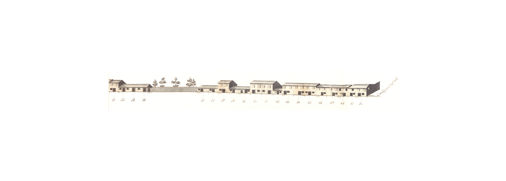

Rua da Ponte de Guimarães

Legenda: Rua da Ponte de Guimarães - Nascente-a.

Legenda: Rua da Ponte de Guimarães - Nascente-b.

Legenda: Rua da Ponte de Guimarães - Poente-a.

Legenda: Rua da Ponte de Guimarães - Poente-b.
Longa rua que juntamente com as ruas das Ágoas e de S. Lázaro ligava a
Arcada com a ponte de Guimarães.
Aberta talvez na Idade Média não nos aparece no Mappa com a importância
que deveria ter como via de entrada na cidade de uma estrada antiga e importante,
e que no seu limite tinha uma velha ponte.
Em 1750 a rua da Ponte estava repleta de casas de 2 pisos (e muitas delas
são de dois pisos bastante baixos) com porta ladeada de janela no rés-do-chão
e duas janelas bracarenses no primeiro andar. Uma única há com um segundo
andar (embora haja outra de dois pisos com mais um recuado), mas há várias
que são térreas e, inclusivé, há zonas apenas, muradas que davam acesso directo
a campos. De notar ainda a pequeníssima quantidade de gelosias e de varandas.
Ao mesmo tempo, e da mesma maneira que a rua de S. Lázaro, as casas aqui
são, não só um pouco mais largas que as da rua Direita que poderá parecer
tipologicamente semelhante, mas também tem «molduras» de pedras em muitas
portas e algumas das janelas.
No extremo Norte da rua, do lado Poente, ficava a capela de S. Lázaro, que
a partir de 1747, data da criação da freguesia do mesmo nome, passou a paroquial.
Das 60 casas do lado Nascente e 72 do Poente eram prazos do Cabido 48
e 40, respectivamente.
Esta rua corresponde hoje ao troço da avenida da Liberdade entre a rua 25
de Abril e o largo das Latinhas ou do Senhor dos Aflitos.
Casa 1 e 2
Enfiteuta: Lopo de Barros e Almeida
Foro: None
Descrição: Domingos Gomes, sombreireiro, casado com
Ursula Fernandes, paga 2280 reis, ao n° 1 da Rua de S. Lázaro.
A casa nº 1 confronta, do norte, com a casa
nº 23 da dita Rua de S. Lázaro e, de poente, com a Rua da Ponte de Guimarães e Terreiro de S. Lázaro.
Casa 3
Enfiteuta: Lopo de Barros e Almeida
Foro: None
Descrição: O Padre Geraldo Duarte paga, de pensão ou foro,
3030 reis ao n° 1 da Rua de S. Lázaro. Esta casa
situa-se na Rua da Ponte de Guimarães e Terreiro
de S. Lázaro.
Casa 4 e 5
Enfiteuta: Lopo de Barros e Almeida
Foro: None
Descrição: João Gomes de Sousa, paga 1040 reis ao nº 1
da Rua de S. Lázaro. Estas casas encontram-se
unidas desde o ano de 1580.
Casa 6
Enfiteuta: Lopo de Barros e Almeida
Foro: None
Descrição: Helena de Araújo, viúva de Martinho de
Araújo, paga 347 reis, ao n° 1 da Rua de
S. Lázaro.
Casa 7
Enfiteuta: Lopo de Barros e Almeida
Foro: None
Descrição: O Padre João Marques de Araújo paga 347
reis, ao nº 1 da Rua de S. Lázaro.
Casa 8
Enfiteuta: Lopo de Barros e Almeida
Foro: None
Descrição: Filipe Jácome de Azevedo, casado com Rosa
Ribeiro, paga 365 reis, ao nº 1 da Rua de S.
Lázaro.
Esteve unida ao n° 7 até ao ano de 1720.
Casa 9
Enfiteuta: Lopo de Barros e Almeida
Foro: None
Descrição: Helena, filha de Agostinho Pinto, paga 575
reis, ao nº 1 da Rua de S. Lázaro.
Casa 10
Enfiteuta: Lopo de Barros e Almeida
Foro: None
Descrição: Senhorinha da Rocha, viúva de Manuel
Carvalho, sangrador, paga 570 reis, ao n° 1 da
Rua de S. Lázaro.
Casa 11 e 12
Enfiteuta: Lopo de Barros e Almeida
Foro: None
Descrição: Sebastiana de Arames, viúva de Pedro
Gonçalves, sombreireiro, paga ao nº 1 da Rua
de S. Lázaro, 205 reis e. 845 reis, por cada
uma destas casas.
Casa 13
Enfiteuta: Lopo de Barros e Almeida
Foro: None
Descrição: Veríssimo Ferreira, tintureiro, casado com
Mariana Ferreira, paga 255 reis, ao nº 1 da
Rua de S. Lázaro.
Casa 14
Enfiteuta: Lopo de Barros e Almeida
Foro: None
Descrição: Manuel Francisco de Araújo, casado com Maria
de Sousa, paga 295 reis, ao nº 1 da Rua de
S. Lázaro.
Casa 15
Enfiteuta: Lopo de Barros e Almeida
Foro: None
Descrição: António Ferreira de Azevedo, armeiro, paga
825 reis, ao n° 1 da Rua de S. Lázaro.
Casa 16 e 17
Enfiteuta: Lopo de Barros e Almeida
Foro: None
Descrição: Domingas de Azevedo, viúva, paga 825 reis, ao
n° 1 da Rua de S. Lázaro.
Encontram-se unidas desde 1680.
Casa 18 e 19
Enfiteuta: Lopo de Barros e Almeida
Foro: None
Descrição:
Francisco Correia, sombreireiro, casado com
Maria Ferreira, paga 1040 reis ao nº 1 da Rua
de S. Lázaro.
Encontram-se unidas desde 1658.
Casa 20
Enfiteuta: Pedro da Cunha Sottomayor, Alcaide Mor de Braga
Foro: None
Descrição: Os herdeiros de Pedro Jorge, clérigo, pagam
600 reis, ao n° 17 da Rua Paio Manta.
Foi construída antes de 1586. Confronta, do
norte, com casa foreira a Manuel José de Brito.
Casa 21 e 22
Enfiteuta: Pedro da Cunha Sottomayor, Alcaide Mor de Braga
Foro: None
Descrição: Os herdeiros do Dr. Gonçalo da Silva,
Dezembargador de Braga, pagam 600 reis ao
nº 17 da Rua Paio Manta e Lages. Encontram-
-se unidas, numa só morada, desde 1586.
Casa 23
Enfiteuta: Pedro da Cunha Sottomayor, Alcaide Mor de Braga
Foro: None
Descrição: Os herdeiros de Salvador João, alfaiate, casado
com Isabel Dias, pagam 175 reis ao nº 17 da
Rua Paio Manta e Lages.
Encontra-se separada do nº 24 desde 1638.
Casa 24
Enfiteuta: Pedro da Cunha Sottomayor, Alcaide Mor de Braga
Foro: None
Descrição: Os herdeiros de Rodrigo Anes, alfaite, pagam 600
reis ao nº 17 da Rua Paio Manta e Lages.
Casa 25 e 26
Enfiteuta: Pedro da Cunha Sottomayor, Alcaide Mor de Braga
Foro: None
Descrição: Os herdeiros de Domingos Pires, picheleiro.
casado com Isabel Vaz, pagam 500 reis ao
nº 17 da Rua Paio Manta e Lages. A casa
nº 26 encontra-se unida à nº 25 desde 1586/.
Casa 27
Enfiteuta: Pedro da Cunha Sottomayor, Alcaide Mor de Braga
Foro: None
Descrição: Domingos João, tratante, casado com Francisca
Antónia, paga 360 reis ao nº 17 da Rua Paio
Manta e Lages. Esteve unida ao nº 25 entre os
anos de 1586 a 1631.
Casa 28 e 29
Enfiteuta: Pedro da Cunha Sottomayor, Alcaide Mor de Braga
Foro: None
Descrição: Os herdeiros de Manuel Marçal, sapateiro,
casado com Branca Vaz, pagam 1400 reis ao
n° 17 da Rua Paio Manta e Lages. Encontram-se unidas desde 1586. A casa nº 29 confronta, do
sul, com o quintal e este com o n° 30.
Casa 30, 31, 32, 33 e 34
Enfiteuta: Pedro da Cunha Sottomayor, Alcaide Mor de Braga
Foro: None
Descrição: Os herdeiros de Domingos Simões,
sombreireiro, casado com Simoa Vieira, pagam
1615 reis ao n° 17 da Rua Paio Manta e Lages.
Encontram-se unidas, numa só escritura de
prazo, desde 1586. A casa n° 34 confronta, do
sul, com quintal da casa n° 35.
Casa 35, 36, 37 e 38
Enfiteuta: João de Magalhães de Araújo Costa, enfiteuta principal do prazo da metade do Casal dos Galos, que foi de Maria André.
Foro: None
Descrição: Os herdeiros de João de Azevedo, casado com
Inês André, pagam 1 alqueire e meio de trigo
ao enfiteuta principal do prazo da metade do
Casal dos Galos, que foi de Maria André, irmã
de Inês André.
Ao nº 35 pertence, ainda, todo o quintal que se
situa à face da rua.
Casa 39
Enfiteuta: João de Magalhães de Araújo Costa, enfiteuta principal do prazo da metade do Casal dos Galos, que foi de Mateus Rodrigues.
Foro: None
Descrição:
Os herdeiros de Domingos Gonçalves, casado
com Catarina Domingues, pagam 500 reis ao
enfiteuta principal do prazo da metade do Casal
dos Galos que foi de Mateus Rodrigues,
serralheiro da Ponte de Guimarães,. casado com
Margarida Francisca.
Casa 40
Enfiteuta: João de Magalhães de Araújo Costa, enfiteuta principal do prazo da metade do Casal dos Galos, que foi de Mateus Rodrigues.
Foro: None
Descrição:
Os herdeiros de Belchior Fernandes, alfaiate,
casado com Catarina Simões, pagam 500 reis.
Foi subemprazada em 1589, à face do prazo da
metade do Casal dos Galos. (sito na freguesia
de S. José de S. Lázaro), que foi de Mateus
Rodrigues.
Casa 41
Enfiteuta: João de Magalhães de Araújo Costa, enfiteuta principal do prazo da metade do Casal dos Galos, que foi de Mateus Rodrigues.
Foro: None
Descrição: Os herdeiros de Geraldo Gonçalves, cutileiro,
casado com Catarina Luís, pagam 500 reis. Foi
subemprazada em 1589, à face do prazo da
metade do Casal dos Galos que foi de Mateus
Rodrigues.
Casa 42
Enfiteuta: João de Magalhães de Araújo Costa, enfiteuta principal do prazo da metade do Casal dos Galos, que foi de Mateus Rodrigues.
Foro: None
Descrição: Os herdeiros de Jerónimo Pinheiro, cónego de
Braga, pagam 500 reis. Foi subemprazada em 1589.
à face do prazo da metade do Casal dos Galos que
foi de Mateus Rodrigues.
Casa 43
Enfiteuta: João de Magalhães de Araújo Costa, enfiteuta principal do prazo da metade do Casal dos Galos, que foi de Mateus Rodrigues.
Foro: None
Descrição: Os herdeiros de Jerónimo Pinheiro, cónego de
Braga. pagam 500 reis. Foi subemprazada em 1589,
à face do prazo da metade do Casal dos Galos, que
foi de Mateus Rodrigues.
Casa 44
Enfiteuta: João de Magalhães de Araújo Costa, enfiteuta principal do prazo da metade do Casal dos Galos, que foi de Mateus Rodrigues.
Foro: None
Descrição: Os herdeiros de André Martins, casado com Maria
de Araújo, pagam 500 reis. Foi subemprazada em
1592, à face do prazo da metade do Casal dos Galos
que foi de Mateus Rodrigues.
Casa 45
Enfiteuta: João de Magalhães de Araújo Costa, enfiteuta principal do prazo da metade do Casal dos Galos, que foi de Mateus Rodrigues.
Foro: None
Descrição: Os herdeiros de Francisco Rodrigues, casado com
Catarina Francisca, pagam 500 reis. Foi
subemprazada em 1600, à face do prazo da metade
do Casal dos Galos que foi de Mateus Rodrigues.
Casa 46
Enfiteuta: João de Magalhães de Araújo Costa, enfiteuta principal do prazo da metade do Casal dos Galos, que foi de Mateus Rodrigues.
Foro: None
Descrição: Os herdeiros de João Francisco, alfaiate. casado
com Catarina Francisca, pagam 220 reis. Foi
subemprazada em 1616, à face do prazo da metade
do Casal dos Galos, que foi de Mateus
Rodrigues.
Casa 47
Enfiteuta: João de Magalhães de Araújo Costa, enfiteuta principal do prazo da metade do Casal dos Galos, que foi de Mateus Rodrigues.
Foro: None
Descrição: Os herdeiros de António Nunes, cutileiro, casado
com Ana Brás, pagam 230 reis. Foi subemprazada
em 1616, à face do prazo da metade do Casal dos
Galos que foi de Mateus Rodrigues.
Casa 48
Enfiteuta: João de Magalhães de Araújo Costa, enfiteuta principal do prazo da metade do Casal dos Galos, que foi de Mateus Rodrigues.
Foro: None
Descrição: Os herdeiros de António Dias, cutileiro, casado com
Mécia Rodrigues, pagam 100 reis. Foi
subemprazada em 1617, à face do prazo da
metade do Casal dos Galos que foi de Mateus
Rodrigues.
Casa 49
Enfiteuta: João de Magalhães de Araújo Costa, enfiteuta principal do prazo da metade do Casal dos Galos, que foi de Mateus Rodrigues.
Foro: None
Descrição: Os herdeiros de António Dias, cutileiro. casado com
Mécia Rodrigues, pagam 100 reis. Foi
subemprazada em 1617, à face do prazo da metade
do Casal dos Galos que foi de Mateus Rodrigues.
Casa 50
Enfiteuta: João de Magalhães de Araújo Costa, enfiteuta principal do prazo da metade do Casal dos Galos, que foi de Mateus Rodrigues.
Foro: None
Descrição: Os herdeiros de Gonçalo Francisco, casado com
Filipa Fernandes, pagam 80 reis.
Foi subemprazada em 1628, à face do prazo da
metade do Casal dos Galos que foi de Mateus
Rodrigues. Confronta, do sul, com o caminho
que vai da Rua da Ponte de Guimarães.
Casa 51
Enfiteuta: Pedro da Cunha Sottomayor, Alcaide Mor de Braga
Foro: None
Descrição: Os herdeiros de António Dias, ferreiro, casado
com Isabel Fernandes, pagam 500 reis ao nº 17
da Rua Paio Manta e Lages, pelo
subemprazamento feito em 1616. Situa-se no
canto da Rua da Ponte de Guimarães, para a
parte do rio. Confronta, do sul, com o caminho
que vai da mesma rua para as Lages e para os
Pelames.
Casa 52
Enfiteuta: Pedro da Cunha Sottomayor, Alcaide Mor de Braga
Foro: None
Descrição: Os subenfiteutas pagam 150 reis pelo quintal ao
n° 17 da Rua Paio Manta e Lages.
A casa é foreira a um vínculo. Confronta, de
norte, com casa do mesmo vínculo.
Casa 53
Enfiteuta: Pedro da Cunha Sottomayor, Alcaide Mor de Braga
Foro: None
Descrição: Os herdeiros de Branca Lopes, viúva, pagam, 260
reis ao nº 17 da Rua Paio Manta e Lages, pelo
subemprazamento feito em 1586. Confronta, do sul.
com cada foreira a um vínculo.
Casa 54
Enfiteuta: Pedro da Cunha Sottomayor, Alcaide Mor de Braga
Foro: None
Descrição: Os herdeiros de Branca Lopes, viúva, pagam
260 reis ao n' 17 da Rua Paio Manta e Lages.
Casa 55
Enfiteuta: Pedro da Cunha Sottomayor, Alcaide Mor de Braga
Foro: None
Descrição: Os herdeiros de Francisco Fernandes, pedreiro.
casado com Francisca Gonçalves, pagam 310
reis ao nº 17 da Rua Paio Manta e Lages.
Entre os anos de 1586 e 1654, esteve unida ao
nº 56.
Casa 56
Enfiteuta: Pedro da Cunha Sottomayor, Alcaide Mor de Braga
Foro: None
Descrição: Os herdeiros de Sebastião Gonçalves,
sombreireiro, casado com Inês de Freitas,
pagam 320 reis ao n° 17 da Rua Paio Manta e
Lages.
Casa 57
Enfiteuta: Pedro da Cunha Sottomayor, Alcaide Mor de Braga
Foro: None
Descrição: Os herdeiros de Luís Ribeiro, sombreireiro,
casado com Isabel Vieira, pagam 310 reis ao nº
17 da Rua Paio Manta e Lages.
Casa 58
Enfiteuta: Pedro da Cunha Sottomayor, Alcaide Mor de Braga
Foro: None
Descrição: Os herdeiros de Luís Ribeiro, sombreireiro.
casado com Isabel Vieira, pagam 310 reis ao
nº 17 da Rua Paio Manta e Lages. Esteve
unida ao nº 57 nos subemprazamentos de 1647
e 1684.
Casa 59 e 60
Enfiteuta: Pedro da Cunha Sottomayor, Alcaide Mor de Braga
Foro: None
Descrição: Pagam 450 reis ao n° 17 da Rua Paio Manta e
Lages.
Casa 61
Enfiteuta: Pedro da Cunha Sottomayor, Alcaide Mor de Braga
Foro: None
Descrição: Pagam 250 reis ao n° 17 da Rua Paio Manta e
Lages.
Casa 62 e 63
Enfiteuta: Pedro da Cunha Sottomayor, Alcaide Mor de Braga
Foro: None
Descrição: Pagam 350 reis ao n° 17 da Rua Paio Manta e
Lages.
Casa 64 e 65
Enfiteuta: Pedro da Cunha Sottomayor, Alcaide Mor de Braga
Foro: None
Descrição: Pagam 450 reis ao n° 17 da Rua Paio Manta e
Lages.
Casa 66
Enfiteuta: Pedro da Cunha Sottomayor, Alcaide Mor de Braga
Foro: None
Descrição: Os herdeiros de António Simões, cardador.
casado com Maria Pereira, pagam 310 reis ao
nº 17 da Rua Paio Manta e Lages, pelo
subemprazamento feito em 1637.
Casa 67
Enfiteuta: Pedro da Cunha Sottomayor, Alcaide Mor de Braga
Foro: None
Descrição: Os herdeiros de Francisco Luís, sombreireiro,
casado com Ângela Geraldes, pagam 310 reis
ao nº 17 da Rua Paio Manta e Lages.
Esteve unida ao nº 66 entre os anos de 1586
e 1637.
Casa 68
Enfiteuta: Pedro da Cunha Sottomayor, Alcaide Mor de Braga
Foro: None
Descrição: Os herdeiros de Nicolau Dias, sombreireiro,
casado com Catarina Geraldes, pagam 480 reis
ao nº 17 da Rua Paio Manta e Lages.
Casa 69
Enfiteuta: Pedro da Cunha Sottomayor, Alcaide Mor de Braga
Foro: None
Descrição: Paga 300 reis ao nº 17 da Rua Paio Manta e
Lages. Esteve unida ao n° 68, entre os anos de
1586 e 1615.
Casa 70
Enfiteuta: Pedro da Cunha Sottomayor, Alcaide Mor de Braga
Foro: None
Descrição: Os herdeiros de Maria Gonçalves, viúva de
Simão Álvares, tecelão, pagam 300 reis ao
nº 17 da Rua Paio Manta e Lages, conforme o
subemprezamento de 1615.
Casa 71
Enfiteuta: Pedro da Cunha Sottomayor, Alcaide Mor de Braga
Foro: None
Descrição: Os herdeiros de Geraldo Gonçalves, serralheiro.
casado com Catarina Luís, pagam 280 reis, ao
nº 17 da Rua Paio Manta e Lages, conforme a
subemprazamento de 1612.
Casa 72, 73 e 74
Enfiteuta: Pedro da Cunha Sottomayor, Alcaide Mor de Braga
Foro: None
Descrição: Os herdeiros de Aires Dias, rei da Mourisca,
casado com Ana Gonçalves, pagam 600 reis ao
n° 17 da Rua Paio Manta e Lages, pelo
subemprazamento feito em 1583.
Casa 75
Enfiteuta: Lopo de Barros Almeida
Foro: None
Descrição: Os herdeiros de André Gomes, ferreiro, casado
com Francisca Gomes, pagam 500 reis ao n° 1
da Rua de S. Lázaro, pelo subemprazamento
feito em 1720. Confronta, do sul, com casa do
vínculo de Tadeu Luís de Guimarães.
Casa 76
Enfiteuta: Lopo de Barros Almeida
Foro: None
Descrição: Os herdeiros de Gaspar Álvares, sapateiro,
casado com Ana de Moure, pagam 240 reis
ao nº 1 da Rua de S. lázaro, pelo
subemprazamento feito em 1629.
Casa 77, 78 e 79
Enfiteuta: Lopo de Barros Almeida
Foro: None
Descrição:
Os herdeiros de António Ferreira de Azevedo,
espingardeiro, pagam 1400 reis ao nº 1 da Rua
de S. Lázaro, conforme subemprazamento feito
em 1726.
Estas casas encontram-se unidas desde 1675.
Casa 80
Enfiteuta: Lopo de Barros Almeida
Foro: None
Descrição: Águeda de Araújo, filha de Manuel de Araújo.
paga 570 reis ao nº 1 da Rua de
S. Lázaro.
Casa 81
Enfiteuta: Lopo de Barros Almeida
Foro: None
Descrição: Jerónimo de Freitas, sombreireiro, casado com
Teresa Ribeiro, paga 565 reis ao n° 1 da Rua
de S. Lázaro.
Casa 82
Enfiteuta: Lopo de Barros Almeida
Foro: None
Descrição: Domingos de Sousa Borlento, casado com
Jerónima do Espírito Santo, paga 545 reis ao nº
1 da Rua de S. Lázaro.
Casa 83
Enfiteuta: Lopo de Barros Almeida
Foro: None
Descrição: Manuel Gomes, latoeiro, casado com Mariana
Pereira, paga 430 reis ao n° 1 da Rua de
S. Lázaro.
Casa 84
Enfiteuta: Lopo de Barros Almeida
Foro: None
Descrição: António Ferreira Gomes, sineiro, casado com
Amónia de Barros, paga 835 reis ao nº 1 da
Rua de S. Lázaro.
Casa 85
Enfiteuta: Lopo de Barros Almeida
Foro: None
Descrição: José Martins, sombreireiro, casado com Isabel
Duarte, paga 440 reis ao nº 1 da Rua de
S. Lázaro.
Casa 86
Enfiteuta: Lopo de Barros Almeida
Foro: None
Descrição: Maria de Oliveira, casada com Agostinho
Ferreira da Rocha, sineiro, paga 1070 reis ao
n° 1 da Rua de S. Lázaro.
Casa 87 e 88
Enfiteuta: Lopo de Barros Almeida
Foro: None
Descrição: Custódio Francisco, casado com Maria da Rosa
de Barros, paga 1025 reis ao nº 1 da Rua de
S. Lázaro.
A casa nº 88 confronta, do norte, com o
Terreiro de S. Lázaro e encontra-se unida ao
n° 87, desde o ano de 1584.
Casa 89
Enfiteuta: Pedro Gomes de Basto, c.c. Maria de Magalhães
Foro: None
Descrição: D. Francisca Xavier Carneiro Tinoco, viúva de
Gregório José da Silva Gayo, por sucessão de
seus pais, Manuel Álvares Tinoco, cidadão de
Braga, e de sua mulher, Catarina Carneiro,
paga 10 reis e 3 galinhas, ao n° 42 da
Rua de S. Lázaro, por uma leira com serventia
de portal para o Terreiro de S. Lázaro.
O portal confronta, do sul, com casa da capela
de S. Lázaro.
Esta leira pertenceu ao prazo n° 11 da Rua de
Trás de S. Marcos (Granjinhos), e à face dele
foram feitas escrituras subalternas dos nº 90,
91 e 92.
Casa 90
Enfiteuta: Pedro Gomes de Basto, c.c. Maria de Magalhães
Foro: None
Descrição: Francisco Gomes, casado com Jacinta Ferreira,
paga 1700 reis ao subenfiteuta do n° 89 e 1
galinha ao n° 42 da Rua de S. Lázaro.
Casa 91
Enfiteuta: Pedro Gomes de Basto, c.c. Maria de Magalhães
Foro: None
Descrição: Custódio Ferreira, carpinteiro, casado com
Catarina de Araújo, paga 1603 reis ao
n° 89 e 1 galinha ao nº 42 da Rua de
S. Lázaro.
Casa 92
Enfiteuta: Pedro Gomes de Basto, c.c. Maria de Magalhães, D. Francisca Xavier Carneiro Tinoco
Foro: None
Descrição: António Francisco, ferreiro, casado com Maria
de Freitas, paga 1603 reis ao nº 89 e 1 galinha.
em nome do mesmo subenfiteuta, ao n° 42 da
Rua de S. Lázaro.
Este número corresponde a um «chão de casa» e
confronta, do norte, com casa foreira à Capela
de D. Gonçalo Pereira.